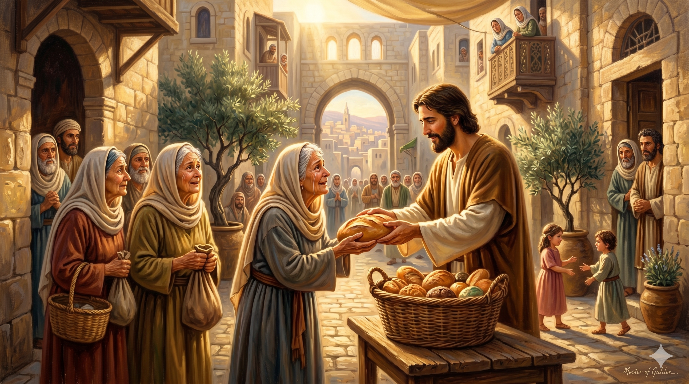

예루살렘 초대교회의 모임 장면 — 사도들이 안수하며 일곱 집사를 세우는 엄숙하고 따뜻한 순간. 스데반이 그 중 첫 번째로 불려나와 성령 충만한 얼굴로 서 있다
"형제들아 너희 가운데서 성령과 지혜가 충만하여 칭찬 받는 사람 일곱을 택하라 우리가 이 일을 그들에게 맡기고 우리는 오로지 기도하는 것과 말씀 사역에 힘쓰리라 하니… 그들이 스데반을 택하니 그는 믿음과 성령이 충만한 사람이라" — 사도행전 6:3-5
사도행전 6장은 초대교회가 성장하면서 맞닥뜨린 첫 번째 내부 갈등을 기록합니다. 헬라파 유대인 과부들이 매일의 구제에서 소외된다는 문제가 불거졌습니다. 히브리파와 헬라파 사이의 문화적 갈등이 교회 내에서 터져 나온 것입니다. 사도들은 이 문제를 회피하거나 묵살하지 않았습니다. 그들은 지혜롭게 해결책을 제시했습니다. 말씀과 기도 사역에 전념해야 할 사도들이 직접 구제 행정을 맡는 것은 바람직하지 않으니, 그 일을 감당할 사람들을 세우자는 것이었습니다.
택함받을 사람의 기준이 주목됩니다. "성령과 지혜가 충만하여 칭찬 받는 사람." 행정적 능력이나 사회적 지위가 아닙니다. 성령 충만과 지혜, 그리고 공동체 안에서의 신뢰가 기준이었습니다. 그 중 첫 번째로 불린 사람이 스데반입니다. 누가는 그를 "믿음과 성령이 충만한 사람"이라고 소개합니다. 스데반은 화려한 등장을 한 것이 아닙니다. 구제라는 소박한 섬김의 자리에서 시작했지만, 하나님은 그 충성됨을 통해 더 큰 역사를 준비하고 계셨습니다.

예루살렘 거리에서 과부들에게 식량을 나눠주는 스데반 — 작은 섬김에 온 마음을 다하는 그의 모습에서 그리스도의 사랑이 빛난다
스데반의 첫 등장은 설교단이 아니라 식탁 봉사였습니다. 초대교회의 가장 위대한 순교자이자 복음 변증가가 된 그 사람이, 처음에는 과부들의 끼니를 챙기는 일을 맡았습니다. 우리는 종종 큰 일을 하고 싶어 합니다. 눈에 보이는 사역, 이름이 알려지는 사역을 원합니다. 그러나 하나님은 주로 작은 자리에서의 충성을 보십니다. 스데반이 구제 사역에서 보여 준 성실함이 그를 다음 장면으로 이끌었습니다.
"성령과 지혜가 충만하여 칭찬 받는 사람" — 이 기준은 오늘 우리에게도 유효합니다. 교회 공동체 안에서, 직장에서, 가정에서 우리는 어떤 사람으로 알려져 있습니까? 기술과 능력보다 더 중요한 것은 성령 안에서의 인격입니다. 섬기는 자리에서 진실하고 충성된 사람을 하나님은 더 큰 부르심으로 이끄십니다.
스데반은 큰 무대를 바라지 않았습니다. 그는 주어진 자리에서 성령 충만하게 섬겼습니다.
오늘 당신의 자리가 작아 보인다면, 그것이 바로 시작점입니다.